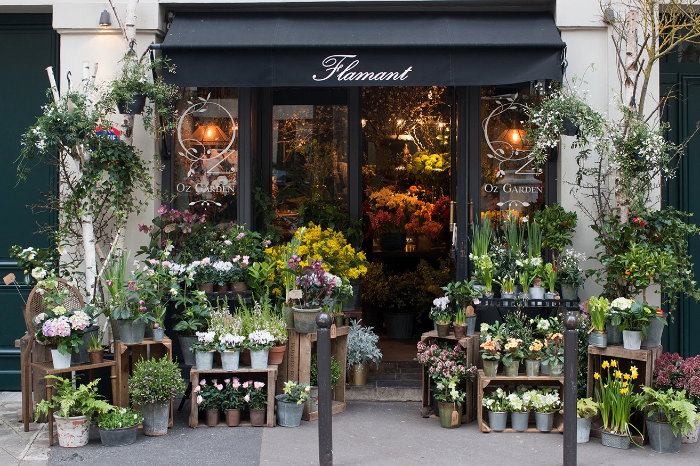

Welcome to "Local Beauty", where blossoms weave tales of vibrant joy. Nestled in the heart of our community, this quaint flower shop is a kaleidoscope of nature's treasures. Each petal, a testament to the local soil's nurturing embrace, whispers tales of local charm . Bouquets curated with passion and precision, "Local Beauty" invites you to embrace the allure of homegrown elegance. From radiant roses to spirited sunflowers, our blooms mirror the spirit of our town. Step into a floral haven where community and nature dance in harmony, celebrating the splendor of local beauty.
"Local Beauty" is more than just a flower shop; it's a celebration of the unique and the sustainable. Our selection ranges from the classic roses to exotic orchids, ensuring there's a bloom for every occasion. Whether you're expressing affection, offering condolences, or simply brightening someone's day, our carefully crafted bouquets speak volumes.
Step into our cozy space, where the fragrance of fresh blossoms envelops you, and the vibrant colors of our arrangements paint a picture of the natural world's beauty. Each petal is handpicked, and every arrangement is a masterpiece.
At "Local Beauty", we believe in the power of flowers to connect, heal, and inspire. Join us in celebrating the artistry of nature, supporting local growers, and sharing the joy that blooms bring to our lives. Come, experience the magic of "Local Beauty" – where flowers tell stories and every petal whispers a message of love.
"Local Beauty" boasts a diverse array of exquisite blooms, each petal a testament to nature's artistry. Step into our floral havenand explore the vibrant variety that awaits:
At "Local Beauty", our diverse floral selection caters to every occasion, reflecting the kaleidoscope of nature's wonders.
At Local Beauty, we take pride in guiding you through the art of choosing flowers for any occasion. Our experienced staff provides personalized consultations, ensuring your floral selections align with the sentiment and tone of the event. Discover the language of flowers as we help you select blooms that carry meaningful symbolism, making your gift truly special. If you're seeking a unique touch, our custom arrangement service allows for a personalized creation tailored to the recipient and the occasion. Embrace the beauty of the seasons with our curated collections, ensuring your flowers are fresh, in-season, and visually stunning. Let Local Beauty be your floral companion, turning your moments into unforgettable experiences through the expressive beauty of flowers.